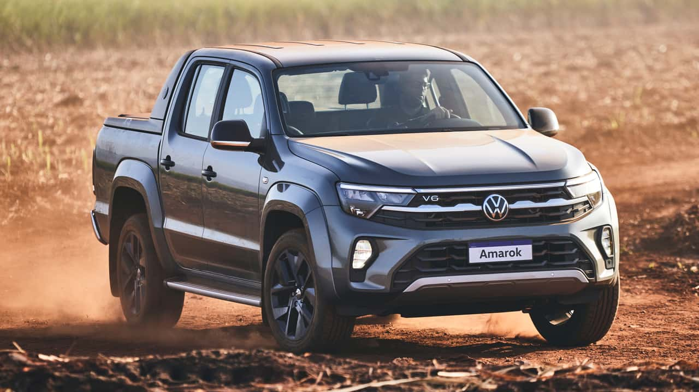
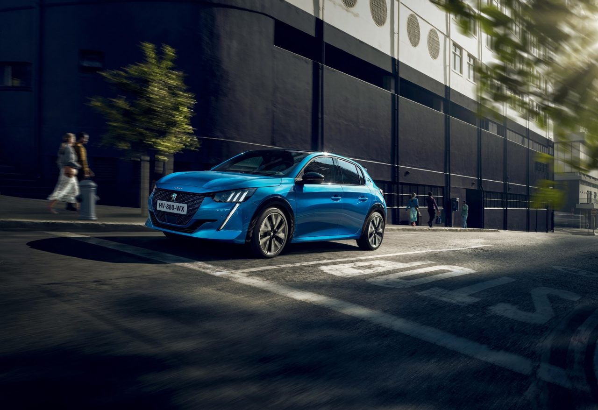
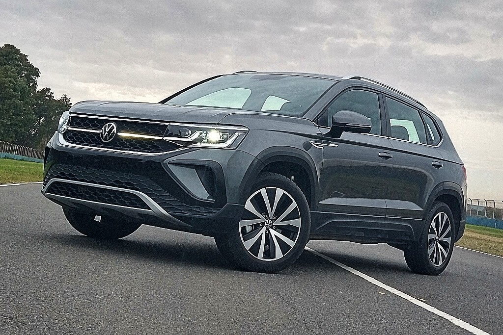

Describir Auto
Opciones encontradas:
Volkswagen Amarok
La Nueva Amarok renovó por completo su frente y ahora cuenta con faros con tecnología VW LED que acentúan sus rasgos geométricos y aportan mayor seguridad al andar. Además, se incorpora un diseño de grilla iluminada totalmente nueva, que le aporta mayor prestancia y elegancia, siendo un distintivo inconfundible dentro del mundo de las pick-ups.
Peugeot 208
El nuevo 208 con un look deportivo y adelantado al futuro, es un vehículo dinámico y bien equilibrado. En el frente, aparece el nombre del modelo para un toque distintivo y moderno. En el lateral, el juego de sombras le da un perfil dinámico. Y en la posterior, las luces traseras con forma de garra completan un diseño armonioso.El nuevo 208 con un look deportivo y adelantado al futuro
Volkswagen Taos
Con tecnología aplicada al diseño, tanto en su interior como en su exterior el nuevo integrante de esta familia lleva nuestro sello por donde lo mires . Taos, será parte de nuestra nueva Identidad, estrenará la nueva firma nocturna de la marca que se podrá ver en los faros traseros y delanteros. Estos están conectados con una guía de luz LED que recorre la parrilla de lado a lado.